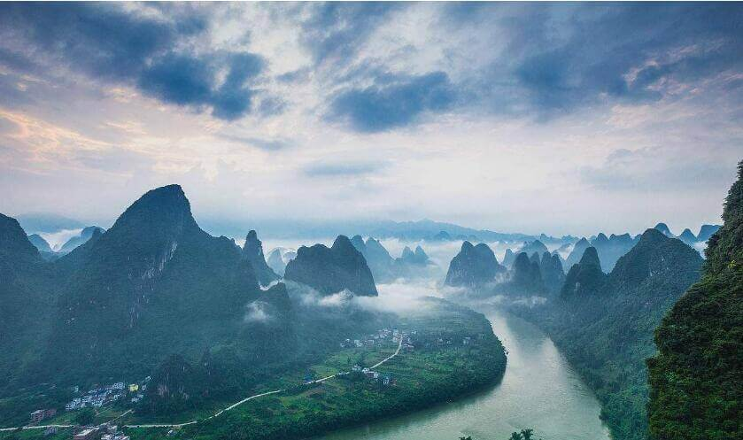

morly旅游圈
桂林山水
《桂林山水》是现代作家陈淼于1962年创作的一篇游记散文。人们都说：“桂林山水甲天下。”我们乘着木船荡漾在漓江上，来观赏桂林的山水。 我看见过波澜壮阔的大海，观赏过水平如镜的西湖，却从没看见过漓江这样的水。漓江的水真静啊，静得让你感觉不到它在流动；漓江的水真清啊，清得可以看见江底的沙石；漓江的水真绿啊，绿得仿佛那是一块无瑕的翡翠。船桨激起微波，扩散出一道道水纹，才让你感觉到，船在前进，岸在后移。 我攀登过峰峦雄伟的泰山，游览过红叶似火的香山，却从没看见过桂林这一带的山。桂林的山真奇啊，一座座拔地而起，各不相连，像老人，像巨象，像骆驼，奇峰罗列，形态万千；桂林的山真秀啊，像翠绿的屏障，像新生的竹笋，色彩明丽，倒映水中；桂林的山真险啊，危峰兀立，怪石嶙峋，好像一不小心就会栽倒下来。 这样的山围绕着这样的水，这样的水倒映着这样的山，再加上空中云雾迷蒙，山间绿树红花，江上竹筏小舟，让你感到像是走进了连绵不断的画卷，真是“舟行碧波上，人在画中游”。
对于桂林，我突然不知道如何形容。去的人太多，赞扬她的人也太多。都上了20元人民币的背景，你说她能不是祖国最具代表性的大好河山吗？桂林山水，我想大概说的就是漓江了。我一向对宣传太猛的景区有种抵触感，不止景区，我以前是拒绝跟潮流的，越火的东西越疏远。后来想通了一个道理：大多数人都喜欢一个东西必有她的理由。既然这样，我又有什么理由错过？于是不得不变成了自己不乐意的样子。记得小时候有篇课文描写桂林山水，其中说到自古以来人们都说“桂林山水甲天下”，最早到底是谁说的？我不知道，当时只顾朗朗成诵。据专家研究考证说是南宋庆元、嘉泰年间担任过广西提点刑狱并代理静江知府的四明（今浙江宁波）人王正功所作的诗句“桂林山水甲天下，玉碧罗青意可参”。
近代爱国人士吴迈也曾引用该句作诗：
桂林山水甲天下，
阳朔堪称甲桂林。
群峰倒影山浮水，
无山无水不入神。
我是不会作诗的，我喜欢随意。可能是脑细胞有限，做不了冥思苦想的事儿。另外，就是不喜欢用词来堆砌。但是我很喜欢诗，很佩服诗人能写得出神入化，朗朗上口。就如诗中所述，桂林，真的值得来一次。她的山不如五岳巍峨磅礴，她的水不如九寨多彩多姿，但是她的山清水秀融合在一起独具一格，美得自然，美得与世无争。就像一位清秀的姑娘，自顾自地亭亭玉立，无视过往行人。乘着竹筏游漓江，真的是“舟行碧波上，人在画中游”了。我们是早上五点半乘竹筏出发的，云雾缭绕，好似仙境。返程途中正好看见日出，可谓惊艳。这里的日出和衡山、海陵岛的不同，它从山峰之间露出脸来，再穿过漂浮在空中的薄雾，由于光影作用，虽然不够光芒万丈，但显得更加婀娜多姿。即使山水欣赏得不过瘾，能看见这样的日出，也算值了啊！桂林，也许很久以前人迹罕至，也是“养在深闺人未识”，但源于那句“甲天下”让世人皆知。每天熙熙攘攘，所有人都把桂林山水的美入侵和剖析得支离破碎。当地人为了吸引游客，游客为了深入了解桂林。如果王正功生在现代，恐怕作不出如此传世佳句吧!
因此，我不愿去详细地描述，就让她在我心中留下最完美的模样。
值得一去的地方：
1、【漓江游船遇龙河漂流】，桂林山水甲天下，漓江风光甲桂林。而百里画廊漓江风光精华要数兴坪-渔村，沿途可以欣赏20元人民币背景图-兴坪佳境，古有“漓江山水在兴坪”之说的——【总统漓江】，几乎是所有游客、画家、摄影家的必游之地，就连美国前总统克林顿也曾经造访过这个美丽的小山村。
2、 【银子岩溶洞】 ，“世界溶洞奇观”，洞中音乐石屏、广寒深宫、雪山飞瀑被称为“三绝”和佛祖论经、独柱擎天、混元珍珠伞称为“三宝”，以雄、奇、幽、美独领风骚，是桂林旅游圈新出现的一颗璀璨的明珠。我看过后，至今还没有想明白那里的3D效果是怎么形成的。
3、 【龙脊梯田】龙脊开山造田的祖先们当初没有想到，他们用血汗和生命开出来的梯田，竟变成了如此妩媚潇洒的曲线世界。
4、【桂林象鼻山】 ，城徽象鼻山-山因酷似一只站在江边伸鼻豪饮漓江甘泉的巨象而得名，被人们称为桂林山水的象征。
内容整理至网络，如有侵权，请联系我们！1255394075@qq.com
